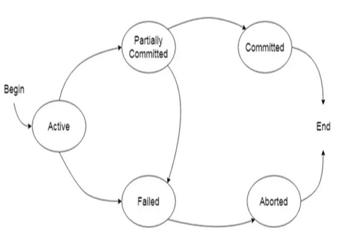

-
Mappatunru Production
Salamaki To Pada Salama
-

Mappatunru Production
Taro Ada Taro Gau
-

Mappatunru Production
Makkiade' Na Malempu'
Tulisan Mengenai "Transaksi DBMS (Requirements ACID)"
Transaksi dalam konteks DBMS, adalah unit kerja logis dan independen yang dilakukan untuk mengakses (membaca), membuat atau mengubah (memperbaharui/menghapus) informasi dalam sistem manajemen database. Sementara transaksi adalah unit kerja yang paling dasar dan sederhana; itu juga membawa banyak kerumitan dalam suatu sistem.
Menjalankan banyak transaksi pada kumpulan data yang sama, dapat menyebabkan data menjadi tidak konsisten atau bisa dibilang kurangnya akurasi data. Integritas data itu sendiri dapat dikompromikan; kelengkapan data juga tidak dijamin.
Untuk mengatasi masalah tersebut dan untuk memastikan konsistensi database dipertahankan sebelum dan sesudah transaksi, properti ACID diperkenalkan. ACID adalah akronim yang diturunkan dari Atomicity, Consistency, Isolation dan Durability.
Atomicity : Jika semua operasi pada sebuah transaksi sukses maka transaksi dianggap sukses, jika salahsatu operasi pada suatu transaksi gagal maka transaksi dianggap gagal
Consistency : Eksekusi sebuah transaksi secara terisolasi bertujuan untuk menjaga konsistensi database.
Isolation : Meskipun ada beberapa transaksi yang berlangsung bersamaan, masing-masing transaksi tidak boleh mengetahui transaksi lain yang sedang berlangsung. Hasil transaksi sementara harus disembunyikan dari transaksi lain yang sedang berlangsung.
Durability : Setelah sebuah transaksi sukses dilakukan, perubahan-perubahan yang dibuatnya terhadap database bersifat permanen, bahkan jika terjadi kegagalan sistem
Active : Dalam status ini, transaksi sedang dijalankan. Ini adalah status awal setiap transaksi.
Partially Committed : Ketika sebuah transaksi menjalankan operasi akhirnya, ia dikatakan berada dalam status partially committed.
Failed : Transaksi dikatakan dalam keadaan gagal jika salah satu pemeriksaan yang dilakukan oleh sistem pemulihan database gagal. Transaksi yang gagal tidak dapat melanjutkan lebih jauh.
Aborted : Jika salah satu pemeriksaan gagal dan transaksi telah mencapai status gagal, maka manajer pemulihan akan mengembalikan semua operasi tulisnya pada database untuk mengembalikan database ke keadaan semula sebelum transaksi dijalankan. Transaksi di pada bagian ini disebut aborted. Modul pemulihan database dapat memilih salah satu dari dua operasi setelah transaksi dibatalkan, yaitu :
1. Mulailah kembali transaksi
2. Hentikan transaksi
Committed : Jika sebuah transaksi menjalankan semua operasinya dengan sukses, maka disebut dengan committed. Semua efeknya sekarang ditetapkan secara permanen pada sistem database.

Arga mentransfer uang dari rekening bank nya ke rekening teman-nya yaitu Anto, maka rangkaian operasinya akan seperti ini:
1. Baca saldo akun Arga
2. Kurangi jumlah dari saldo Arga
3. Tulis sisa saldo ke akun Arga
4. Baca saldo akun Anto
5. Tambahkan jumlah tersebut ke saldo Budi
6. Tulis saldo baru yang diperbarui ke akun Budi
Transaksi untuk transfer $50 dari account Arga ke account Anto:
1. read(A)
2. A := A – 50
3. write(A)
4. read(B)
5. B := B + 50
6. write(B)
Masalah utama yang dapat terjadi selama transaksi adalah bahwa transaksi dapat gagal sebelum menyelesaikan semua operasi di set. Hal ini dapat terjadi karena listrik mati, sistem crash, dll. Ini adalah masalah serius yang dapat membuat database dalam keadaan tidak konsisten. Asumsikan bahwa transaksi gagal setelah operasi ketiga (lihat contoh di atas) maka jumlahnya akan dipotong dari akun Aarga tetapi Anto tidak akan menerimanya.
Untuk menangani masalah tersebut kita perlu memahami properti database ACID. Masing-masing dari empat komponen ACID berkontribusi pada kemampuan transaksi untuk memastikan integritas data.